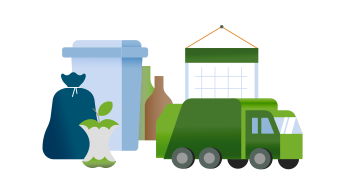
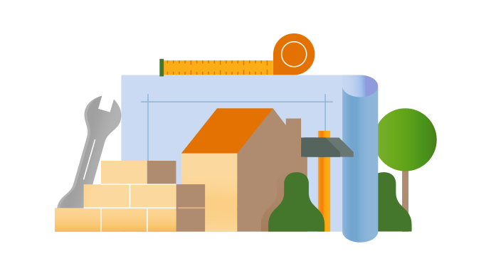

Direct uit GitHub
Ontwikkelaars kunnen iconen rechtstreeks uit de GitHub repository laden, waardoor de set altijd actueel blijft op websites.
Bekijk de RepositoryOntwikkeld door OpenGemeenten en gemeente Veenendaal. Bedoeld voor toptaken, formulieren en navigatie op overheidssites — in vier varianten, altijd passend.
Iconen
4Varianten
SVGFormaat
CC0Publiek Domein
Bel Ons
Bericht
Cultuur
Dossier
Formulier
Gezicht
Intimidatie
Levensloop
Nieuwsbrief digitaal
Plattegrond
Ontwikkelaars kunnen iconen rechtstreeks uit de GitHub repository laden, waardoor de set altijd actueel blijft op websites.
Bekijk de RepositoryOnder leiding van Frameless zijn er van de regular iconen webcomponenten gemaakt, waardoor deze eenvoudig te gebruiken zijn in Common Ground-projecten.
Bekijk de DocumentatieLiever alles in één keer binnenhalen? Download de complete set als ZIP-bestand.
Download de iconensetOntwikkeld door OpenGemeente samen met gemeente Westland is er ook een speciale illustratieset gemaakt speciaal voor overheidscommunicatie; Illustraties zorgen voor aantrekkelijke en toegankelijke communicatie tussen gemeente en burger.

